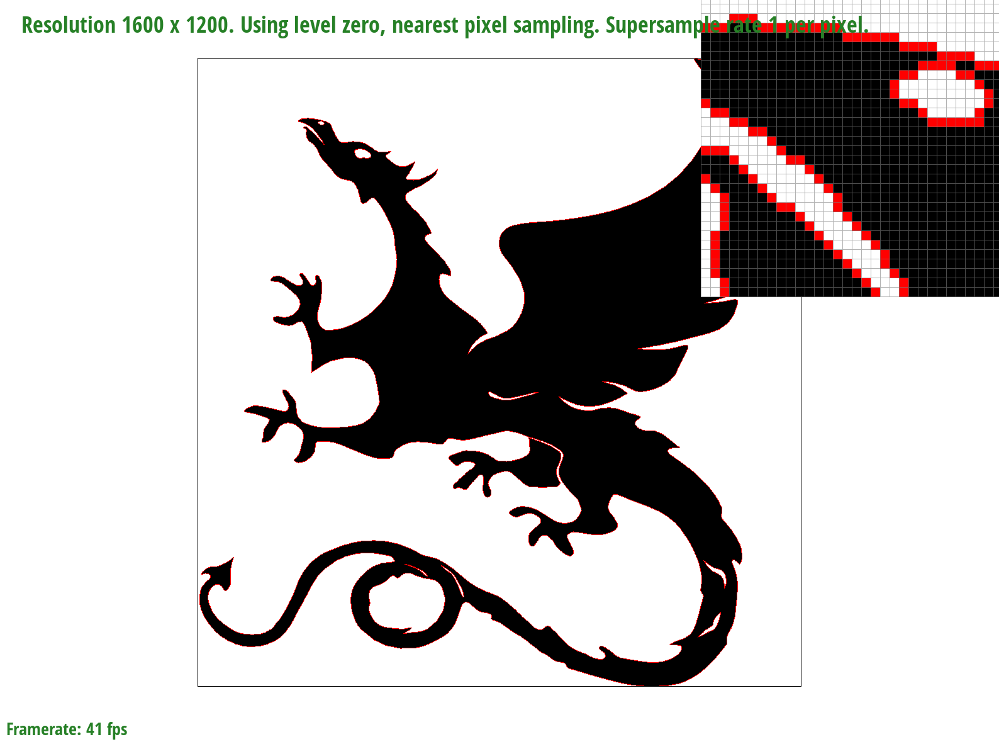
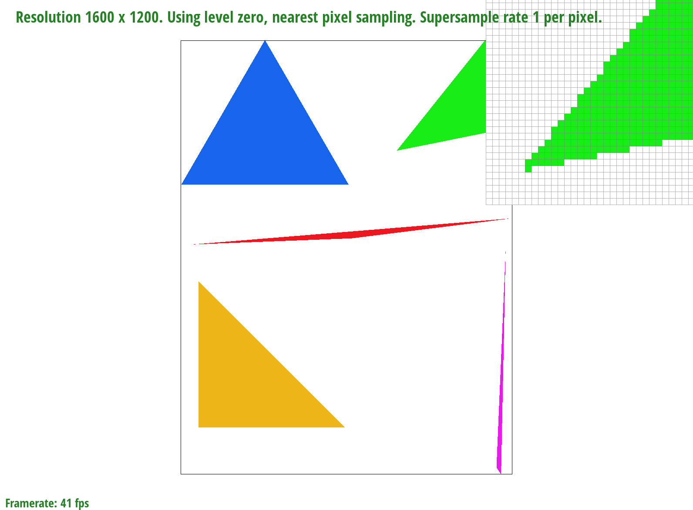
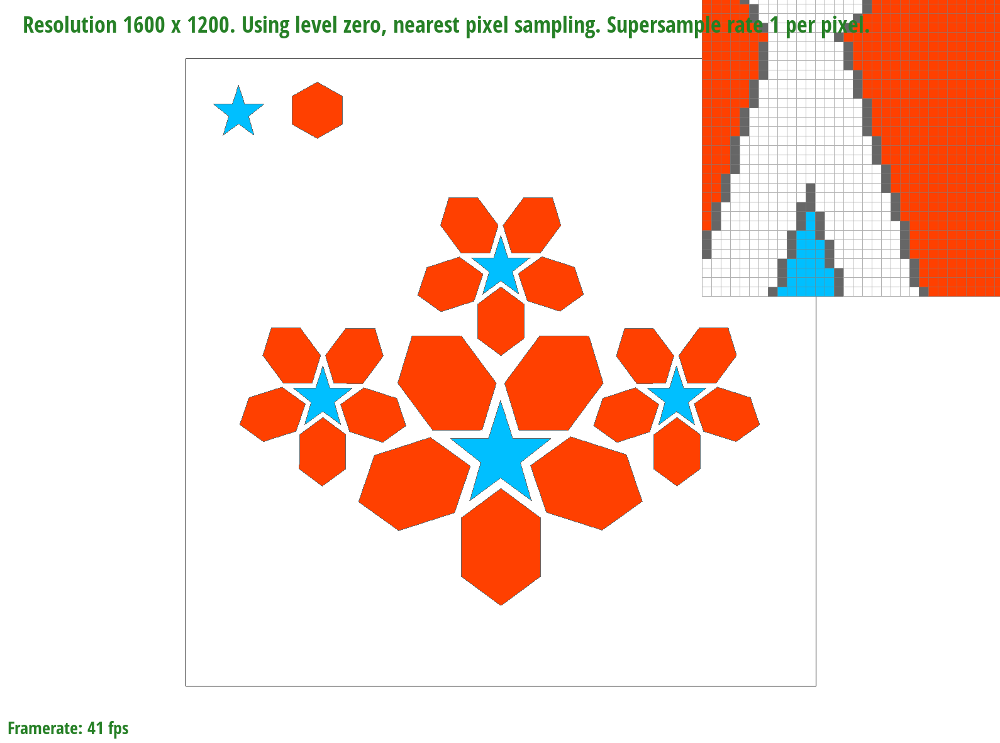

Test 3

Test 4

Test 5

Test 6
For this project we implemented rasterization in C++ that shows a visual representation of what different sampling and interpolation techniques look like. Rasterization takes an input image and converts it into output that appears as pixels on a display. This allows an easy compare and contrast of different methods.
I found the idea behind the anti-alising technique supersamping to be very interesting as it allows us to take multiple samples within one pixel and take the average of those values to output an intermediate color value which helps to blur sharp lines and angles.
Test 3
Test 4
Test 5
Test 6
For this portion we iterate through all the points on the canvas and call a helper function point_triangle which takes the current x and y coordinates as well as those of the 3 vertices of the triangle and computes the dot product of the current point with the first vertex and second vertex, second and third, and third and first vertex. If the values of all three of these dot products have the same sign, it means that the point is within the triangle.
To make sure that this algoithm is no worse than one that checks each sample within the bounding box of the triangle, I computed the min/max x and y values of the 3 points. This allows us to narrow down the points we need to check to a rectangle around the triangle.